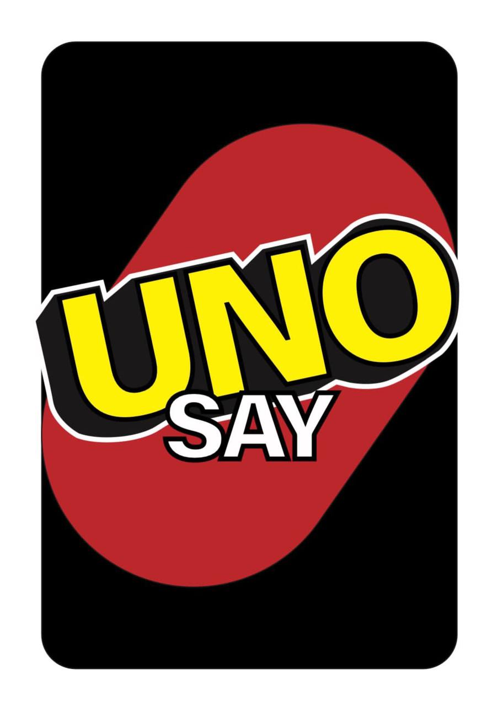
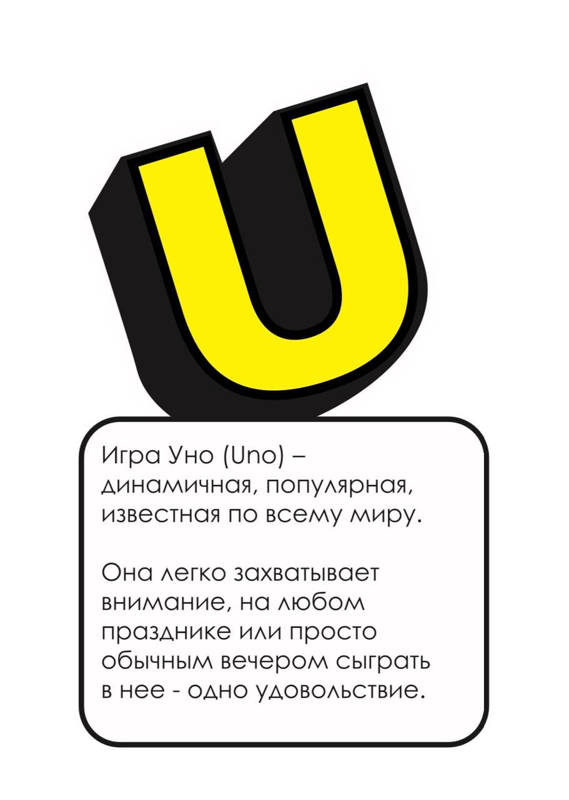
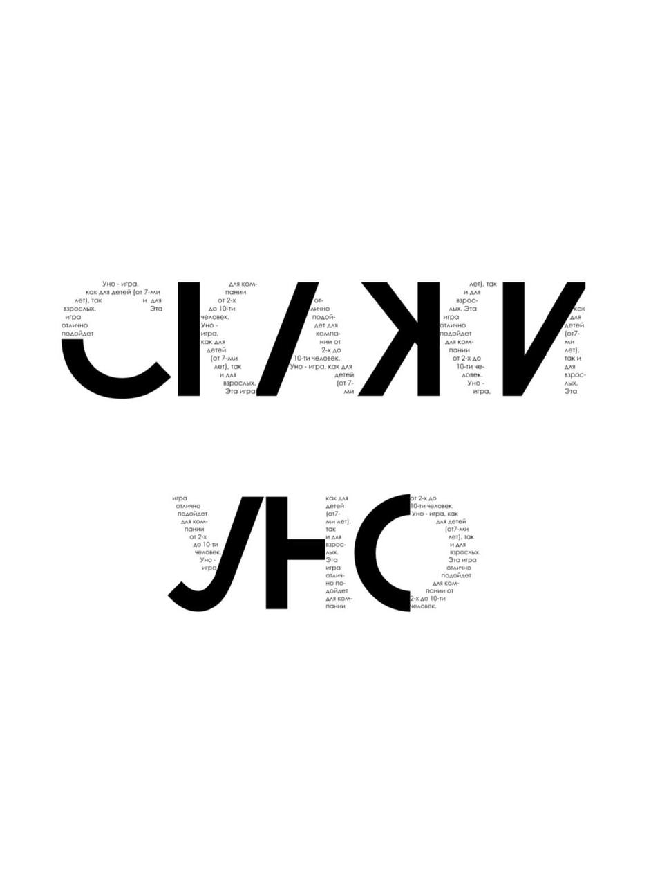
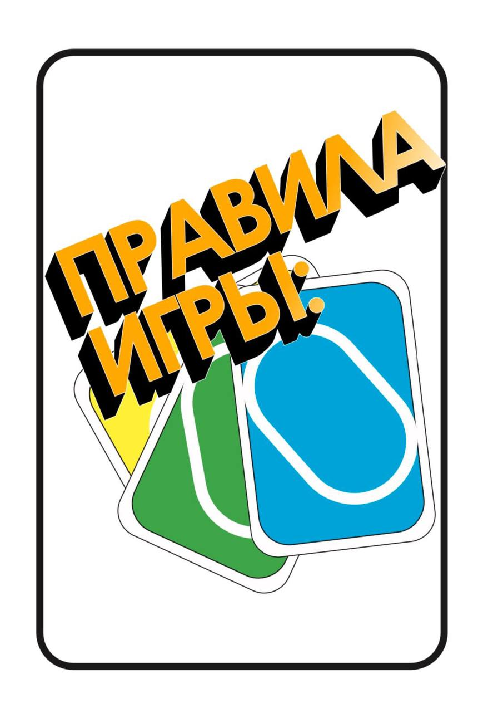

ПРОЕКТ ДЛЯ ИЗДАТЕЛЬСТВА МКИК
ЗИН: Сценарий для игры “Uno”
Игра “Uno” – динамичная, популярная, известная по всему миру. Она легко захватывает внимание, на
любом празднике или просто обычным вечером сыграть нее – одно удовольствие. Это карточная настольная
игры с простыми и понятными предписаниями, выразительной соревновательностью и вариативностью. Для
кого подойдет: “Uno” – игра, как для детей (от 7-ми лет), так и для взрослых. Эта игра отлично
подойдет для компании от 2-х до 10-ти человек!
В ЗИНе описаны правила игры, история происхождении, а также присутствуют яркие иллюстрации и многое
другое.

